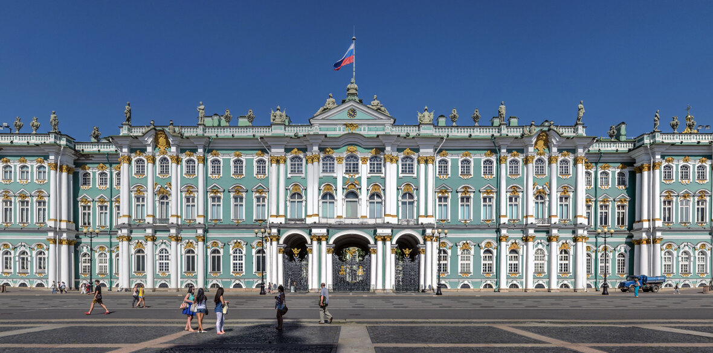
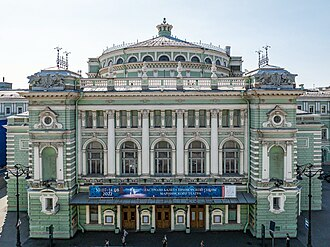

Культура Санкт-Петербурга
Санкт-Петербург — это главная культурная столица России, заслуженно гордящаяся более чем 200 музеями, почти 80 театрами и уникальным архитектурным наследием XVIII–XIX веков.

Государственный Эрмитаж
Один из крупнейших художественных музеев мира, основанный Екатериной II, в коллекциях которого хранятся миллионы экспонатов.

Мариинский театр
Всемирно известная сцена, подарившая миру легенды балета и оперы.
Подробнее
Вернуться назад